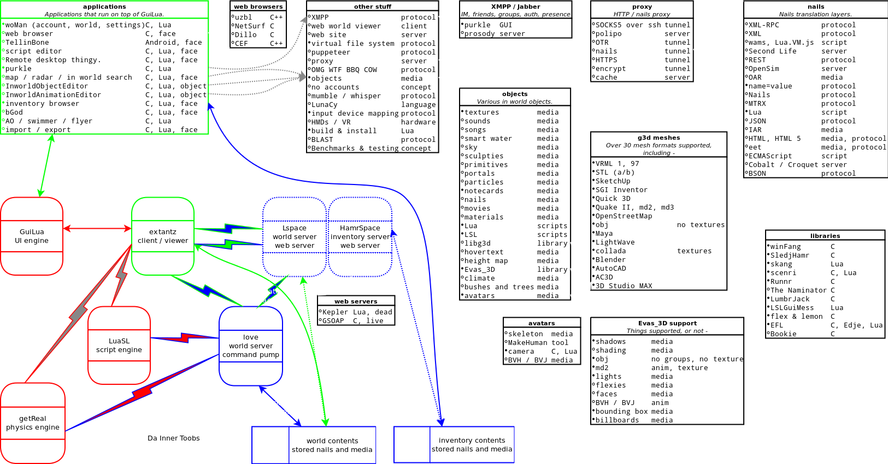

SledjHamr is a rewrite from scratch of Second Life (SL) / OpenSim (OS) style 3D online virtual world client / server. The plan is to use OS server and SL clients as crutches, when a bit of SledjHamr is ready, it replaces the matching bit in OS/SL.
We have tried a variety of names for this thing, NGIW, OMG, SledjHamr. Open Management Group have a US registered trade mark of "OMG", and they deal with computer integration standards for "enterprise", in other words, big business, with deep pockets plus scary lawyers, and too close to what we are doing for us to get away with it for long. So, in the interests of having a name so I can just start coding dammit, I'm going with my original name of SledjHamr. It's not very marketing friendly, and even I have to stop and think exactly how it is spelled. lol
OMG might stand for Open Magic Garden, but we are open to other suggestions. We don't have a great name for it, until recently I liked NGIW (Next Generation Immersive Web) best, but OMG has plenty of appeal. What it is, even if we don't have a clear name for it, is an improved version of OpenSimulator and Imprudence, a vision of better virtual worlds. We have a few pages talking about it. Check out:
In reverse alphabetical order to enhance your reading pleasure.
We have a code repo on github now - https://github.com/onefang/SledjHamr with just a small README that points to this page. The experimental branch has all the actual code and stuff. We can finally start writing code. A local copy of the source can be found here.
Now that we have a web site, I should turn this into a real web site, huh? Until then, use the https://github.com/onefang/SledjHamr stuff.
